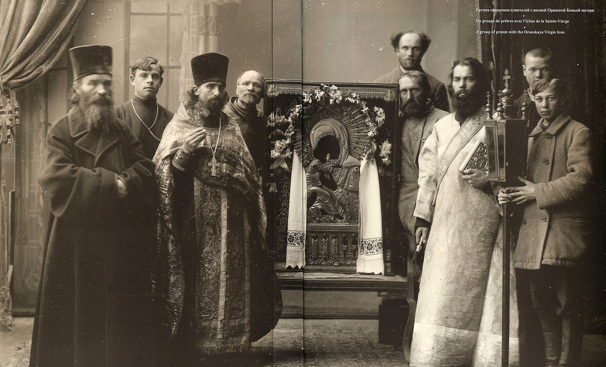

Религия
Государственной религией Российской империи было православие, что проистекало из ст. 41-й Свода основных государственных законов Российской империи: «Император, престолом Всероссийским обладающий, не может исповедовать никакой иной веры, кроме Православной», а также ряда иных. Согласно Основным законам, император имел попечение о сохранении чистоты православного учения и его господства среди существовавших в России исповеданий: «Император, яко христианский Государь, есть верховный защитник и хранитель догматов господствующей веры, и блюститель правоверия и всякого в Церкви святой благочиния. В сем смысле Император в акте о наследии престола именуется Главою Церкви». Статья 40-я Основных законов гласила: «Первенствующая и господствующая в Российской империи вера есть Христианская Православная Кафолическая Восточного исповедания». Российская церковь объединяла около двух третей населения империи. В 1721 году Пётр I реорганизовывал управление Российской церкви, упразднив существовавшее в ней патриаршество. С тех пор Российская церковь возглавлялась Святейшим Правительствующим Синодом, полностью подконтрольным императору, и ставшим фактически одним из министерств; для надзора над деятельностью Синода государство учредило особую должность синодального обер-прокурора.
Метрические записи были законодательно закреплены за соответствующим духовенством; института гражданского брака не существовало (с 1874 г. «раскольникам» было разрешено регистрировать браки в полицейских участках).
На 1898 год Российская церковь насчитывала 37 000 приходов, 720 соборных церквей, 2000 церквей при общественных учреждениях, 440 мужских и 250 женских монастырей.
Педер фон Хавен писал про своё путешествие в 1736—1737 годах: свобода вероисповедания «была всеобщей и распространялась на все конфессии, за исключением лишь евреев и иезуитов… Было опубликовано постановление, согласно которому людям нельзя было спорить о религиозных взглядах…». До 17 (30) апреля 1905 года выход из православия считался уголовным преступлением.
Екатерина II приняла решение учредить в 1788 году «Оренбургское магометанское духовное собрание» (ведавшее татарами и башкирами), в дальнейшем после реорганизаций получившие название «Духовное Управление Мусульман» (позднее также появляется Таврическое духовное правление). Таким образом, у мусульман появился свой глава, утверждаемый императором.

Империя использовала религию для решения национально-политических задач, например, как ответ на польские восстания 1830 и 1863 годов была проведена кампания принудительного воссоединения греко-католиков с православием. Но зачастую, это было лишь формальностью и потомки, со временем, отпадали в другие религии.
Особенностью религиозной политики было деление различных сект по степени их «вредности». Такая классификация была впервые установлена в 1842 году постановлением Особого временного комитета по делам раскольников по согласованию со Святейшим Синодом, и включала деление на «вреднейшие», «вредные», и «менее вредные».
Ещё одной ступенью ниже находились «терпимые непризнанные» — в первую очередь старообрядцы (до 1905 года старообрядцы официально именовались «раскольниками»). В самом низу числились «непризнанные нетерпимые», вроде сект скопцов и хлыстов, которых государство считало вредными, и подвергало преследованиям; в целом подобным преследованиям подвергались: молокане, духоборы, хлысты (объявлены правительством «особо вредными»), мормоны, штундисты (запрещены в 1894 году, будучи объявлены «сектою особенно вредною в церковном и общественно-государственном отношениях») адвентисты седьмого дня (легализованы в 1906 году), также субботники и прочие иудействующие. «Особо вредными» считались секты духоборов, молокан и скопцов, с 1894 года — штундистов, с 1904 года — хлыстов.
Законодательство о вероисповеданиях развивалось в направлении расширения веротерпимости: в XVIII веке отпадение от православия в нехристианское исповедание иногда каралось смертью; в начале XX веке отступивший от православия, согласно ст. 185 «Уложения о наказаниях», отсылался к духовному начальству для вразумления, а его имущество бралось под опеку. Указ 17 апреля 1905 г. «Об укреплении начал веротерпимости», Манифест 17 октября того же года, закон 14 (27) марта 1906 года о введении в действие нового Уголовного Уложения для преступлений религиозных предоставляли подданным свободу совести и отменяли большинство ограничений и запретов в вероисповедной области, в частности в отношении старообрядцев и сектантов, ламаистов было воспрещено впредь официально называть идолопоклонниками и язычниками.